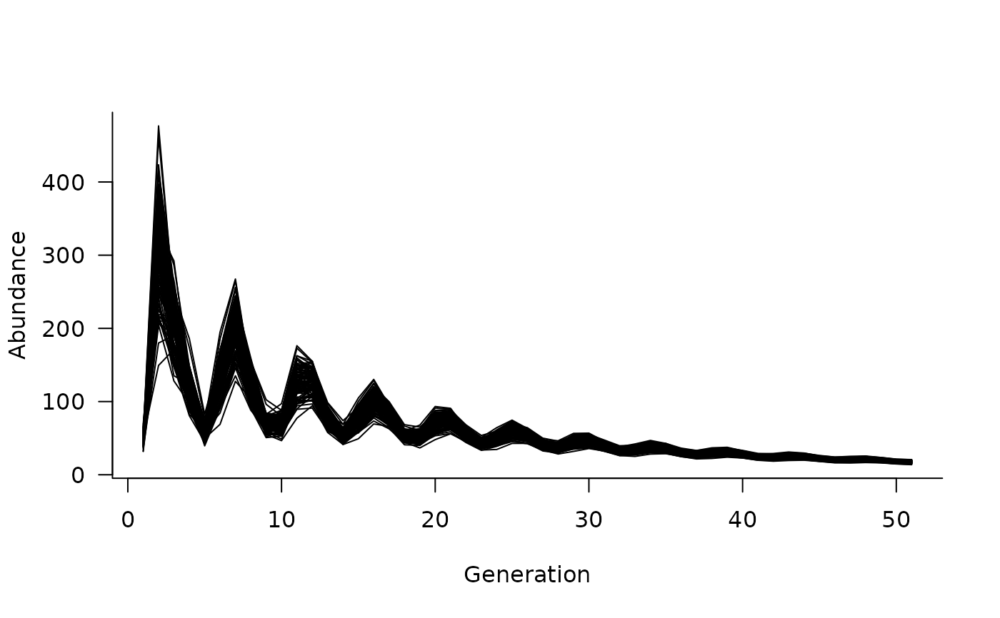

Use pre-defined forms of density dependence based on common density-dependence functions.
Details
Additional functions are provided to define common
forms of density dependence. Currently implemented models
are the Ricker model and Beverton-Holt model, both with
a single parameter k.
Examples
# define a population matrix (columns move to rows)
nclass <- 5
popmat <- matrix(0, nrow = nclass, ncol = nclass)
popmat[reproduction(popmat, dims = 4:5)] <- c(10, 20)
popmat[transition(popmat)] <- c(0.25, 0.3, 0.5, 0.65)
# define a dynamics object
dyn <- dynamics(popmat)
# add some density dependence
dd <- density_dependence(
masks = reproduction(popmat, dims = 4:5),
funs = ricker(1000)
)
# update the dynamics object
dyn <- update(dyn, dd)
# simulate trajectories
sims <- simulate(dyn, nsim = 100, options = list(ntime = 50))
# and plot
plot(sims)
